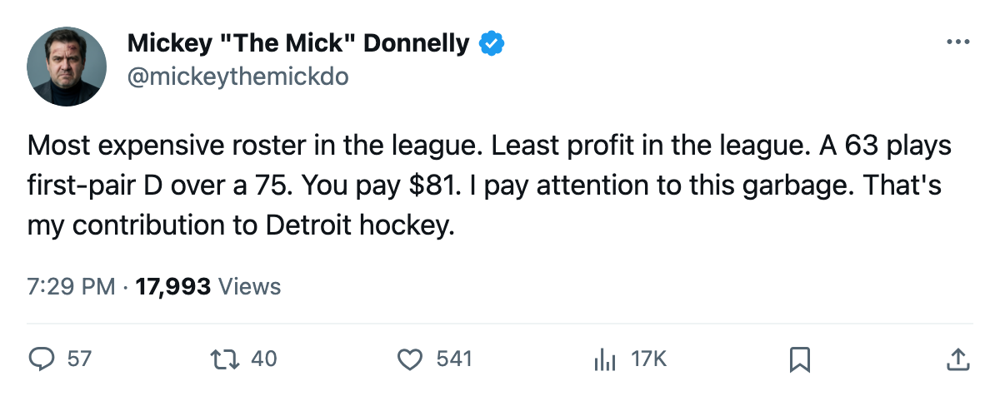
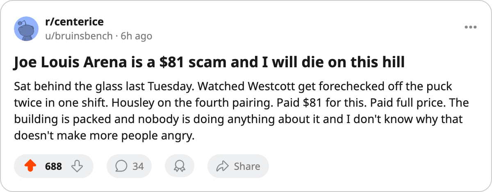

YOU'RE PAYING $81 TO WATCH A 63 ON FIRST PAIR: DETROIT HAS THE MOST EXPENSIVE ROSTER IN HOCKEY AND THE THINNEST MARGINS
$80.89 million in payroll. $6.62 million in profit. The lowest in the league. And the coach is playing his worst defenseman on the top pairing.
 Mickey "The Mick" DonnellyColumnist, ex-goalie · The Penalty Box
Mickey "The Mick" DonnellyColumnist, ex-goalie · The Penalty Box
DET coach: $80.89M payroll, $6.62M profit, 63 playing first-pair over a 75

 Detroit Red Wings has the most expensive roster in the league. $80.89 million. They charge $81 a seat to 15,675 people per night and they make the least profit of any club in the league: $6.62 million. The most expensive team in hockey barely breaks even and the product is 18-17-4 with a minus-1 goal differential.
Detroit Red Wings has the most expensive roster in the league. $80.89 million. They charge $81 a seat to 15,675 people per night and they make the least profit of any club in the league: $6.62 million. The most expensive team in hockey barely breaks even and the product is 18-17-4 with a minus-1 goal differential.
They are tied with  St. Louis Blues at $1.62 million per point. Only
St. Louis Blues at $1.62 million per point. Only  Philadelphia Flyers ($1.65M) gets less value from a dollar spent.
Philadelphia Flyers ($1.65M) gets less value from a dollar spent.
THE 63 PLAYS FIRST PAIR. THE 75 RIDES THE FOURTH.
Here is the part that makes me want to climb over the glass.  Duvie Westcott59, rated 63, plays left defense on the first pairing.
Duvie Westcott59, rated 63, plays left defense on the first pairing.  Phil Housley72, rated 75, plays the fourth pairing. A 12-grade gap on the bluest line in the building. The Bureau's Book says the 75 is better than the 63 by 12 grades. The coach says the 63 starts the game.
Phil Housley72, rated 75, plays the fourth pairing. A 12-grade gap on the bluest line in the building. The Bureau's Book says the 75 is better than the 63 by 12 grades. The coach says the 63 starts the game.
The home record is why nobody upstairs is making a change. 17-6 at Joe Louis Arena. 15,675 in the seats at $81 a pop. The building is full, the product is passable in front of the people who paid for it, and $6.62 million profit is still profit. The road record is 6-15. A minus-1 goal differential for $80.89 million.
Brett Hull is 40. He plays 22.3 minutes a night. He has 72 points. The man is a Hall of Famer carrying a top-six role on the most expensive roster in the league because there is nobody behind him who can take the shift. The front office spent $80.89 million and could not find a second power forward to take the 22 minutes off a 40-year-old's legs.
 Darren McCarty70 has 51 penalty minutes, 6th in the league.
Darren McCarty70 has 51 penalty minutes, 6th in the league.  Kirk Maltby75 has 50, 7th. The enforcers are doing their job. The problem sits at the blue line where a 63 plays ahead of a 75.
Kirk Maltby75 has 50, 7th. The enforcers are doing their job. The problem sits at the blue line where a 63 plays ahead of a 75.
Doug Reimer and his spreadsheet will tell you Housley's minutes are structured differently, that his deployment is offense-first, that the match-ups don't line up with the rating. Fine. Then put the 75 on the first pairing and the 63 on the fourth and watch the minus-1 move. Or don't. The building is full at $81 and the profit is positive and nobody upstairs is losing a night's sleep.
You are, though. You paid $81.

